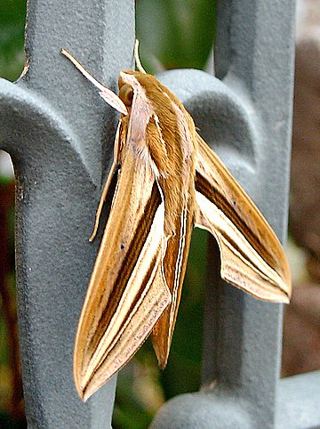

इम्पेशियन्स हॉकमॉथImpatiens Hawkmoth
Theretra oldenlandiae · Sphingidae · INS-0157

- Scientific name वैज्ञानिक नाम
- Theretra oldenlandiae (Fabricius, 1775)
- Family कुल
- Sphingidae
- Hindi हिंदी
- इम्पेशियन्स हॉकमॉथ
- Local names स्थानीय नाम
- impatiens hawkmoth, hawkmoth
- Status here यहाँ की स्थिति
- native
- Movement आवागमन
- Resident, here all year
- Known from कहाँ दर्ज
- Others have published records from the wider Awadh–Purvanchal plain, none yet from Basti–Ayodhya अवध–पूर्वांचल से दूसरों के प्रकाशित अभिलेख, बस्ती–अयोध्या से अभी नहीं
- IUCN IUCN
- not evaluated
- Review समीक्षा
- audited and independently read
When to look कब देखें
Present all year. साल भर मौजूद।
Uses and possibilities उपयोग और संभावनाएँ
Drawn from the documented uses in the profile below, where each is labelled traditional, current or a research lead. All uses →
Tell it apart from इनसे अलग पहचानें
इम्पेशियन्स हॉकमॉथ / Impatiens Hawkmoth
Theretra oldenlandiae (Fabricius, 1775) — Sphingidae
इम्पेशियन्स हॉकमॉथ — यह एक छोटी, तेजी से उड़ने वाली रात की पतंगा है जो हमारे बागों, खेतों और घास वाली ज़मीनों में बहुत आम दिखाई देती है। इसका शरीर छोटा, भूरा या हरा-भूरा होता है, पंखों पर सफ़ेद या हल्के रंग की पट्टियाँ होती हैं। बिना बैठे फूलों पर होवर करती है, बहुत जल्दी उड़ान भरती और गिरती है। कैटरपिलर हरा होता है और बालसम (impatiens) की पत्तियों को खाता है। भारत के सभी बागों में आने वाली दर्शनीय पतंगा है।
Quick Identification त्वरित पहचान
| Feature | Description |
|---|---|
| Size | Small hawkmoth; wingspan 50–65 mm (smallest of the large hawkmoths) |
| Colour | Brown to grey-brown; variable with olive-green tones |
| Wings | Narrow, elongate; with pale cross-bands; hindwings pale |
| Body | Compact, brown with pale markings on thorax and abdomen |
| Proboscis | Long, thin, coiled when at rest; unrolls to feed from flowers |
| Flight | Swift, erratic, hovering at flowers in evening light |
Field tip: A small, dark brown hawkmoth with a swift, erratic hovering flight pattern at balsam and other flowers in evening light. Smaller and darker than other hawkmoths; hovers at flowers but also visits host plants.
हिंदी — कैसे पहचानें: छोटी, भूरी हॉकमॉथ। पंखों पर हल्की धारियाँ। बालसम के फूलों पर होवर करती है। तेजी से उड़ती है।
Morphology आकारिकी
Biometrics (typical measurements for northern Indian populations):
| Measurement | Range |
|---|---|
| Body length | 28–35 mm |
| Wingspan | 50–65 mm |
| Forewing length | 24–30 mm |
| Proboscis length | 35–42 mm |
Wings and body:
- Forewing: Brown to grey-brown with pale cross-bands and a complex pattern of lighter and darker areas. Variable in colour.
- Hindwing: Pale grey or whitish with indistinct darker markings.
- Body: Compact and robust relative to size, brown with pale markings along the thorax and dorsal line.
Proboscis: Long, thin, coiled tube, 35–42 mm long, which unrolls to penetrate flowers for nectar. When not feeding, coiled tightly under the head.
Sexual dimorphism: Males have longer, more prominent antennae than females. Females are typically larger.
Adaptations: Large compound eyes; powerful flight muscles enabling sustained hovering and rapid maneuvering.
Life Cycle / Phenology जीवन चक्र
| Stage / Month | Event |
|---|---|
| April–November | Main breeding season; females laying eggs on balsam and related plants |
| Egg | Single egg laid on leaf undersurface of impatiens; hatches in 4–6 days |
| Larva | Caterpillar green, reaching 35–40 mm; 2–3 weeks to maturity |
| Pupa | Forms in soil beneath host plant; brown pupa; multiple generations per year |
| Adult | Emerges in evening; lifespan 2–3 weeks |
| Multiple generations | Year-round in warm climates; 3–4 per year in warm season |
हिंदी: गर्मी में कई पीढ़ियाँ। कैटरपिलर हरा, 2–3 हफ़्तों में बड़ा होता है।
Host Plants or Prey आहार
Larval host plants:
- Balsam (Impatiens balsamina, I. walleriana)
- Touch-me-not (Impatiens spp.)
- Related Balsaminaceae species
Adult nectar sources:
- Balsam flowers (primary host)
- Jasmine, datura, petunias
- Various cultivated flowers
- Night and dawn-blooming flowers
Predators / Natural Enemies शत्रु
- Birds: Insectivorous birds and night-flying birds feed on adults.
- Parasitoid wasps: Small wasps parasitize caterpillars and pupae.
- Spiders: Web-building and hunting spiders catch adults and larvae.
- Entomopathogenic fungi: Beauveria and Metarhizium species.
Agricultural / Human Relevance कृषि प्रासंगिकता
Minor pest status: Caterpillars occasionally feed on balsam plants grown as ornamentals or in gardens. Economic damage is usually minimal unless populations are very high.
Pollination: Adult moths pollinate balsam and other flowers while feeding.
Ornamental interest: Valued by naturalists and enthusiasts for its dramatic hovering flight and small size relative to other hawkmoths.
Today. Common in gardens and on wayside vegetation wherever balsam plants are present. Generally considered harmless or beneficial.
Research direction (a lead, not a result). Host-plant phenology and Theretra oldenlandiae seasonal occurrence in eastern Uttar Pradesh; nectar-plant preferences and pollination ecology; larval performance on different balsam species; behavioral ecology during hovering and feeding.
हिंदी: बालसम की पत्तियों को खाता है, पर ख़ास नुकसान नहीं करता। बालसम के फूलों का परागण करता है।
Expected Locally स्थानीय रूप से अपेक्षित
Not a field record. Written from published accounts for eastern Uttar Pradesh. No confirmed local sighting yet — if you have seen it, that is what the atlas needs.
अभी तक स्थानीय पुष्टि नहीं। यह विवरण प्रकाशित स्रोतों से है, किसी अवलोकन से नहीं।
To be expected in all gardens with balsam plants throughout Basti district. Most visible in evening light and at dusk during the warm season (April–November), hovering at balsam flowers. Also recorded on other cultivated ornamental plants and in field margins. The moth is present year-round in warm climates and particularly common during monsoon and post-monsoon seasons.
Distribution वितरण
Global range: Widespread across South and Southeast Asia, including India, Myanmar, Thailand, and Indonesia.
In India: Distributed throughout the country, particularly in gardens and cultivated areas with balsam plants.
In Uttar Pradesh: Common in all gardens and cultivated areas with balsam or ornamental plants.
In Basti district / eastern UP: Expected in gardens and ornamental plantings wherever balsam is grown.
Research Questions शोध प्रश्न
Anyone can investigate these | कोई भी इन प्रश्नों की जाँच कर सकता है
- How many larval generations occur on balsam plants during a single season? / एक मौसम में कितनी पीढ़ियाँ आती हैं? — Grow balsam from seed; monitor larvae monthly.
- How many flowers does one moth visit during a 30-minute feeding period? / एक पतंगा कितने फूलों पर आता है? — Observe and count flower visits.
- What is the preferred nectar plant when multiple suitable flowers are available? / किस फूल पर सबसे ज़्यादा आता है? — Set up balsam and other flowers side by side; record visits.
- How long does the larval development take at different temperatures? — Rear larvae at controlled temperatures; measure development time.
- What is the sex ratio of adults emerging from pupae? — Collect pupae; rear to adults; count males and females.
Similar Species मिलती-जुलती प्रजातियाँ
| Species | How to tell apart | हिंदी | |
|---|---|---|---|
| [[convolvulus_hawkmoth\ | Convolvulus Hawkmoth]] (Agrius convolvuli) | Larger; more robust; pale cross-bands more distinct; feeds on morning glory | सवेरे की बेल की पतंगा — बड़ी |
| Privet Hawkmoth (Sphinx ligustri) | Much larger; different wing pattern and colour | जैस्मीन की पतंगा — बहुत बड़ी | |
| [[coffee_bee_hawkmoth\ | Coffee Bee Hawkmoth]] (Cephonodes hylas) | Even smaller; different body colour; different habits | कॉफ़ी मधुमक्खी हॉकमॉथ — छोटी, अलग रंग |
Field rule: A small brown hawkmoth with a swift, erratic hovering flight at balsam flowers in evening light, combined with small brown larvae on impatiens foliage, identifies the Impatiens Hawkmoth.
Taxonomy & Classification वर्गीकरण
Original description. Described by Fabricius in 1775 in Systema Antliatorum from Asian specimens. Type locality is Asia. The genus name Theretra comes from Greek; the specific epithet oldenlandiae refers to Oldenlandia (now Oldenlandia or related genera), a plant name.
Subspecies. Monotypic — no subspecies are currently recognised.
Family and order placement. Order Lepidoptera, family Sphingidae (hawkmoths). The Sphingidae are characterized by their robust bodies, strong flight muscles, and ability to hover.
Phylogenetic notes. Theretra oldenlandiae is one of several Asian Theretra species, phylogenetically related to Theretra jasminoides and other Old World species.
IUCN status rationale. Not formally assessed. Abundant and widespread; no conservation concerns.
Photo Gallery फोटो गैलरी
No photos yet — add field photos to media/species/impatiens_hawkmoth/ and run node scripts/sync_photos.js.
Wanted:
- Adult hovering at balsam flower
- Adult at rest on foliage
- Green caterpillar on balsam leaf
- Pupa in soil (if accessible)
References संदर्भ
- Fabricius, J.C. (1775). Systema Antliatorum. Bohn, Kiel and Hamburg. [original description]
- Pittaway, A.R. (1993). The Hawkmoths of the Western Palaearctic. Entomographica, 3, 1–288. [comprehensive hawkmoth review]
- Kehimkar, I.D. (1994). Insect pollinators in Indian agroecosystems: A survey and recommendations. Indian Journal of Entomology, Supplement: 23–34.
- Nayar, K.K., Ananthakrishnan, T.N. & David, B.V. (1989). General and Applied Entomology. 2nd edition. McGraw-Hill, New Delhi.
- Subramanian, K.A. (ed.). (2006). Lepidoptera of the Western Ghats, India. Zoological Survey of India, Kolkata.
- GBIF Occurrence Data — Theretra oldenlandiae, Asia (2010–2025). GBIF taxon key: 7659136.
Source file: species/fauna/insects/impatiens_hawkmoth.md